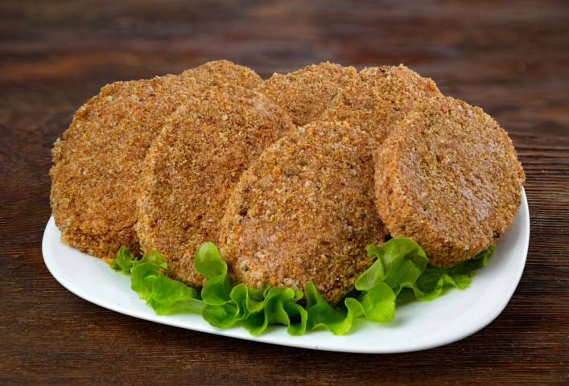

100 г
215 ккал
30 мин
Ингредиенты:
- Свинина (корейка или окорок) - 520 гр
- Яйцо - 1 шт.
- Чеснок - 1 зубчик
- Крахмал - 40 гр
- Сыр (типа российского) - 40 гр
- Майонез* - 40 гр
- Масло для жарки — 100 гр
По желанию:
- Соль
- Чёрный молотый перец
Способ приготовления:
1. Мясо нарезать кубиками (0,7*0,7...примерно), посолить, поперчить, добавить чеснок, предварительно пропущенный через пресс, перемешать и поставить на холод примерно на 2 часа.
2. Затем в массу добавить яйцо, крахмал, хорошо перемешать и сформовать котлеты в виде бифштекса.
3. Обжарить до румяной корочки с обеих сторон.
4. Переложить в лоток для запекания, посыпать тертым сыром, полить майонезом и запечь в духовке.